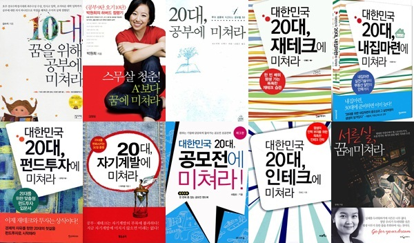
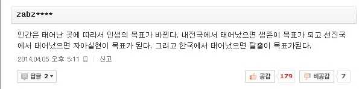

지금까지는 세간에서 말하는 일반적인 불안장애의 원인과 처방, 그리고 현실에 대해서
조금 음울하고도 안타까운 현실에 대해 설명을 하였습니다만.
지금부터는 우리 자기 자신에 대해 이야기 해보고자 합니다.
이것은 이전까지 설명한 내용들을 완전히 뒤집어 놓는 이야기입니다.
높은 성적을 받고도 만족하지 못하고 더욱 치열한 경쟁을 강요받는 환경에서 자란 사람이 있다고 합시다.
주위의 조건이나 기대치를 최대로 올려놓아, 경쟁자가 끊임없이 속출하는 상류사회에 있었지만
어느날 난치병에 걸려 쓰러져 불구가 되어 다시 기대값이 떨어져
이번에는 "건강만 해다오" 라는 상냥한 배려를 받게 됩니다.
아픔을 인정받고 동정받아 특별한 배려를 받고싶다는 상상은 학창시절에 누구나 한번쯤 해보았을 것입니다.
성인이 된 이후에는 반대로 건강검진을 받으며
아무런 문제없이 신체조건을 유지해 나가고 싶다는 바람을 가집니다.
이런 이야기들을 하는 이유는 각각의 사람마다 처한 환경과 시대가 다르며,
불안의 원인도 다르고, 생각하는 방편도 모두 다르기 때문입니다.
사람에 따라 기대치가 높은 사람도 있을 것이며, 현실과 타협해 기대값을 낮추어 살아가는 사람도 있을 것입니다.
저는 이 문제를 두가지 측면에서 접근하고자 합니다.
하나는 주변 환경에 대한 절대적 영향에 대한 것이고
다른 하나는 환경과 무관한 상대적인 자기 자신의 마음과 영혼에 관한 것입니다.

세상의 잔혹함이란 그야말로 미치지 않고서는 살아갈 수 없는 환경을 이야기합니다.
정신질환자가 증가하는것도 인간을 자원과 부품으로서 생각하며
기계 이상의 효율성을 요구하는 이 사회의 잔인함 때문일 것입니다.
이런 상황에서는 개인의 가치관, 감정, 진심, 진실따위는 쓰레기통에 처박히게 됩니다.
회피성 성격장애 환자가 회피를 계속해나가는것도 이것에 있습니다.
전쟁터에 계속 머물러 있는 이상 끊임없이 총알을 피해다녀야 하는것은 당연한 일입니다.
그러나 마음의 준비나 각오를 할 겨를도 없이 사회에 내몰린 불안장애환자같은 경우는
갈피를 잡지 못하고
PTSD같은 현상을 계속 겪게 됩니다.
나이트클럽에서 명상을 하거나, 화장실에서 식사를 한다면 이처럼 어리석은 일은 없을 것입니다.
장소와 번지수를 잘못 찿아가면 필연적으로 불합리한 일을 당하게 됩니다.
남녀노소 신체적 조건이 모두 다르고 그에 맞는 의복과 도구가 존재하듯이.
사람의 성격과 기질에 따라서도 맞는 분위기와 환경이 맞추어져 있어야 하는것이 당연합니다.
그러나 자신이 부적절한 자리에 있다면 그곳에서 나와 알맞은 곳을 찿아가야 합니다,
누군가 칼을들고 쫒아오면 맨손으로 맞설게 아니라 최선을 다해 도망가야 하고,
쓰나미가 밀려오면 맞서 싸우려 할게 아니라 즉시 도망해야 합니다.
총알을 회피하려고 개활지에서 몸을 끝임없이 이리저리 움직여도 언젠가는 치명상을 입게 마련이니
안전한 지역으로 대피하여 생명을 보전해 나가는게 최우선 과제가 되어야 합니다.
당신의 정신건강따위에 전혀 관심이 없는 사회는 이렇게 이야기 할 것입니다.
"비겁한 자식, 또 도망가냐, 언제까지 그렇게 살래?"
"니가 그러니까 정신병자인거지, 남들 다 하는데 왜 너는 못하냐?"
저는 이런 이야기를 듣고 마치 침몰해가는 배에서 "가만히 있으라, 버텨라" 라고 말해놓고
자기는 안전한 곳으로 몸을 옮기는 어떤 선박의 선장의 모습이 그려졌습니다.
인간의 삶에서 가장 중요한것은 외모도 자존심도 재산도 아닌 생명과 건강입니다.
그 이외의 모든 산업과 직업과 사회활동은 신체와 정신의 생존과 보전을 위해 존재하는 부산물입니다.
그러나 언제부터인가 주객이 전도되어 외적인 것들과 물질이 인간을 지배하기 시작하고.
인간은 스스로 생명과 건강을 깎아 타인의 맘에 들기 위하여 행동을 하기 시작했습니다.
이것은 비단 불안장애 뿐만 아니라 일반적으로 세상에 존재하는 모든 불행의 씨앗이 됩니다.
회피성 성격장애와 불안장애에서 완전히 벗어나는 방법이 있습니다.
그것은 맞서싸우는게 아닌, 완전히 안전한 환경으로 피신하는 것입니다.
그리하면 더이상 피할 이유도, 불안에 떨 이유도 사라집니다.
어중간한 상태에서 몸부림을 치는것이야말로 가장 큰 불안의 원인이기 때문입니다.
물론 이것에는 결단과 선택이 필요하다는것, 그리고 또다른 리스크를 동반하는 것임을 잘 알고 있습니다.
그러나 이제 각자도생의 시대로 접어들어 그 누구도 나의 안전을 보장해주지 않는다는 것 쯤은
굳이 불안장애를 가진 사람이 아닌 일반인들조차도 피부로 느끼고 있을 정도입니다.
세상의 손가락질과 비난에 굴복하여 참고만 있다가 내 건강이 훼손되고 상황이 파국으로 치닫는다 한들
나에게 비난을 퍼부었던 이들이 보상을 해 줄 리도 없습니다.
안정되고 여유로운 삶을 보내고 있는 사람이라면 이 글을 읽을 필요도 없이 계속 그대로 살면 됩니다.
그런사람들은 나르시시스트인 경우가 많고, 공감능력이 결여되어
자신의 형편에 맞춰 남을 재단하고 책임을 전가하는 버릇이 있어서
불안장애를 가진 취약한 영혼의 입장에서는 천적과도 같은 존재들이기에
우리들은 일단 기만자들에게서 탈출해야 하고
그들의 자만으로 도배된 SNS와 같은 매체들도 반드시 피해야만 합니다.
삶의 목표가 성취와 성공이며, 또 그런 맛을 보고 자아도취감에 빠진 이들은 그대로 내버려두고
우리는 삶의 목표를 자신이 정착할 환경을 찿는것으로 잡고 기나긴 여정을 시작해야 합니다
그 목표지점이 어디가 될지는 개인마다 다르겠지만
자신의 인생에 있어서 어디가 재난지역인지는 본인이 가장 잘 알고 있을 것이기 때문에
시행착오는 있겠지만 자신이 겪어온 환경에서 멀어지면 멀어질수록
괴로움을 잊어가는 본인을 발견하실 수 있을 것입니다.
마음을 비우고, 지금 이 순간을 살며, 생각을 비우고 사는것이 행복의 비결이라고들 많은 책에서 이야기 하고 있지만
그것을 바로 실천에 옮길 수 있는 사람이 있다면 그는 분명 성인군자겠지요.
어떤 책에서는 몰입을 하고 주의를 집중함으로써 고통에서 눈을 돌려 지금 현재를 마주할 수 있다고도 합니다.
사회에서 말하는 외모도,학벌도,경제력도 세상 기준으로 볼때 뒤떨어지는 사람이
생각보다 불행하지 않게 살아갈 수 있는 것도, 그가 외모나 경제력에 흥미를 가지지 않고
자신이 제어할 수 있는 취미와 전문분야에 몰두하고 있기 때문일 것입니다.
그런 사람들의 공통적인 특징으로서는 지금 현재 있는 그대로의 자기 자신에 만족하는 것에 있습니다.
또한 자신의 모습을 잊을 정도로 생각을 없애거나 다른곳으로 돌린다고 볼 수도 있습니다.
물론 신체의 통증때문에 고통을 잊을 수 없다면
병원을 다니며 치료를 하고 진통제를 처방받고 약을 복용하고
적절한 스트레칭과 건강관리를 해 나가야 합니다.
여기서도 중요한 포인트는
나를 제외한 모두가 어떠한 혜택을 받고있고, 나 혼자만 탈락하였을때
좌절하거나 실망하지 않는 태도에 있습니다.
불안장애는 신체화 증상을 동반하기 때문에 이런 환경에서 몸을 떨지 않을수는 없겠지만
그것이 나와 아무런 관계가 없다면, 이야기는 달라집니다.
다른 사람들이 프로레슬링 무료 관람권에 당첨되서 기뻐한다 할 지라도
내가 프로레슬링에 관심이 없다면 비록 당첨이 되지 못했다 하더라도 실망할 이유는 없습니다.
전혀 관심이 없기 때문이죠.
사회가, 세상이 내게 관심을 전혀 주지 않는다면,
나도 그런 사회나 세상에 관심을 가지지 않으면 됩니다.
학교를 다니며, 직장을 다니며, 불행한 나날이 계속된다면 그곳에 있을 필요가 없습니다.
검정고시를 보거나, 직장을 옮기거나, 파트타임을 알아보는 등
어떤 선택을 하던지 지금이 고통스럽다면 거기서 벗어나는 선택은 옳습니다.
흔히들 말하는 "나때는 말이야" 같은 라떼같은 소리들은 그냥 가볍게 무시하시면 됩니다.
그건 그사람 사정이고, 그 상황에서는 도망칠 길도 없었기 때문입니다.
저 또한 학생시절때는 학교에 가지 않으면 부모님께 혼나기 때문에 어쩔수 없이 다녔고,
군대에서 도망치면 법적인 처벌이 따르기 때문에 그저 버텨내었습니다만.
그런 인고의 세월들이 내게 가져다 준 것은 [반드시 벗어나고야 말겠다] 는 의지 뿐이었습니다.
누군가의 목표는 10억을 벌고 50억을 벌고 결혼을 하고 집을 사는 것일수도 있겠습니다만.

누군가 북한에서 태어났다면 10억 50억이 문제가 아니라 탈출을 하는것이 가장 정답에 가까운 솔루션일 것입니다.
저도 성적은 전교1등인 엄마친구아들에게 비교당하고
집안 반찬은 아프리카 기아들에게 비교당하는 기이한 이중잣대로 비교당했던 입장에서 할 말은 아니지만
세계 인구의 절반이 하루에 2.5달러로 생활하고 있는것에 비하면
여러분들은 적어도 상위 50% 이상에 속하는 사람들이며
이전 페이지에서 설명한 인지행동치료법에 의하면 불안할 이유가 전혀 없는 사람들입니다.
그렇기 때문에 여러분은 일단 노오력을 강요하고 불안을 부추기는 미디어나
주변인들의 목소리에 전혀 귀 기울일 필요가 없습니다.
무언가를 중요하다고 느끼는 순간 필요성과 집착이 생기며
그것이 없으면 자신의 가치가 떨어진다고 생각해버리는 악순환의 사고회로가 부활하기 때문입니다.
그 무엇도, 아무것도 없을지라도 본인 스스로는 존중받고 존재할 가치가 있으며
모든 사람은 숨을 쉬는 것 만으로도 존귀하다는 것을 본인 스스로에게 이야기 해 줄 필요가 있습니다.
아무리 쓸모가 없고 불안해하는 이런 본인이라도
타인의 질타나 압력에 의해 간접살인을 당해야 할 이유는 없습니다.
자신의 가치를 스스로 다시 책정하고 연약한 자신이라도 살아갈 의미를 주는 존재를 찿으십시오.
불안이란 원래 인간이 위기 대처를 위해 원래 가지고 있는 '능력' 이며,
위기의 순간에서 우리를 지켜주는 능력 그 자체로 자연스러운 것입니다.
'나는 불안을 가지고 있지만 그것을 컨트롤 할 수 있고, 대인관계를 지속해 나갈 수 있다' 라는
대인관계 그 자체를 도전과 치료 수단으로서 이용하는 것이 대인관계 요법의 원리입니다.
불안장애를 가지고 있다고 해서 "삶의 의욕"이 아예 없는것은 아니기 때문에
인간관계라는것을 삶을 실현하기 위해 부딫혀야 하는 필요악으로 같이 끌어안고 가겠다는 각오가
치료수단으로서의 불안장애라고 할 수 있습니다.
내면의 깊은 불안과 우울을 겪으며 민감한 감정을 가지고 있는 사람만이 느낄 수 있는
자신과 상대의 인간적인 불완전함을 깨달으면서도 그것을 수용해나가는 수용성이라는 능력이 존재합니다.
상대방이 알고보면 나와 같은 불완전한 인간이라는 것을 이해해 나감으로써
[상대적 중요도]가 떨어져 나가 불안의 증상도 개선이 되어갑니다.
이 때부터는 증상에 구애되거나 얽매이지 않는 상태가 됩니다.
인생을 살아가다보면 우리의 발목을 잡는 것들도 아주 많고, 우리 앞길에 문이 닫히는 것을 볼 때가 많습니다만,
사실은 우리를 거절했던 사람이 아주 별로인 사람이고 그를 만나지 않는게 행운이었을지도 모릅니다.
항상 의외의 문이 또한 기다릴 수도 있고
사고나 사건으로 인해 신체적 정신적으로 손상을 입어 고통에 빠졌을지라도
이것이 계기가 되어 지금까지 생각했던 상식이 뒤집어져 깨달음에 한걸음 더 나아갔을 수도 있습니다.